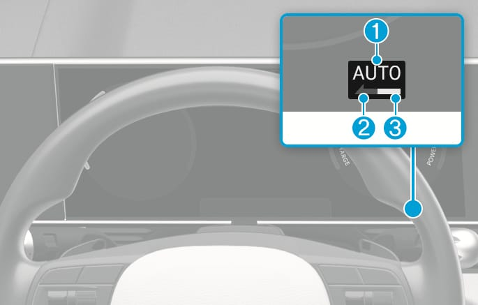
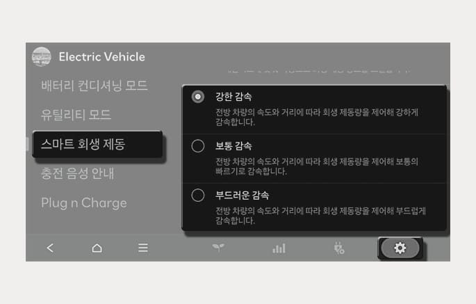

스마트 회생 제동량 설정하기

2C_RegenerationBrakeLevel
- 스마트 회생 제동 표시등
- 회생 제동량
- 전방 차량/과속 카메라 감지등
-
스마트 회생 시스템이 켜지면 클러스터에 'AUTO' 문구가 표시되고, 작동 조건에 따라 회생 제동량이 조절됩니다.
-
내비게이션 연동을 설정한 경우, 전방 차량 및 과속 카메라를 감지하면 표시등이 하늘색으로 켜집니다('내비게이션 연동 설정하기' 참고).
스마트 회생 제동 기본 단계 변경하기
스마트 회생 제동 사용 중 회생 제동 증가/감소 레버(
-
선택한 회생 제동 단계가 최소 회생 제동 단계로 사용됩니다.
스마트 회생 제동 강도 설정하기

2C_SmartRegenerationSettings
인포테인먼트 시스템 홈 화면에서 Electric Vehicle >
내비게이션 연동 설정하기
인포테인먼트 시스템 홈 화면에서 Electric Vehicle >
-
내비게이션 연동 기능은 운전자 편의를 위한 기능이며, 안전 기능이 아닙니다.
-
전방을 주시하고 도로 교통법을 준수하며 차량을 안전하게 운전하는 것은 운전자의 의무입니다. 현대자동차는 주행 중 발생한 사고나 운전자의 도로 교통법 위반에 대해 어떠한 책임도 지지 않습니다.